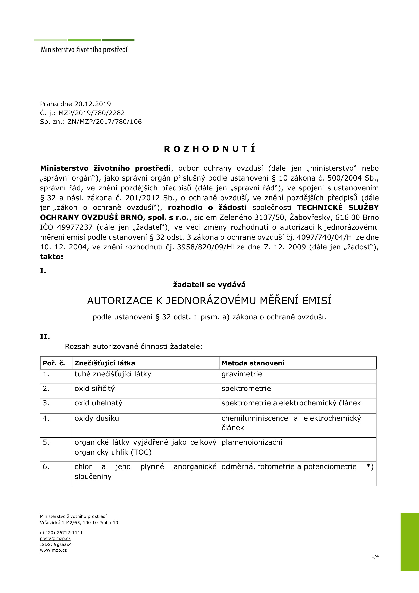

Osvědčení MŽP ČR
Autorizované měření emisí
Autorizované měření znečišťujících látek a spalin
Akreditované měření tuhých znečišťujících látek (TZL), plynných emisí (NOx, SO₂, CO, TOC) a těžkých kovů pro průmyslové zdroje znečišťování.
Akreditovaná laboratoř • Normy ČSN EN 14181 • TZL, TOC, plyny